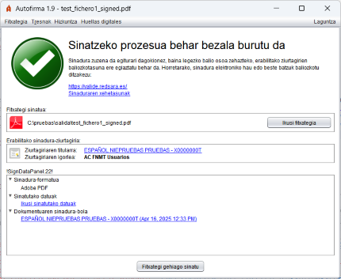
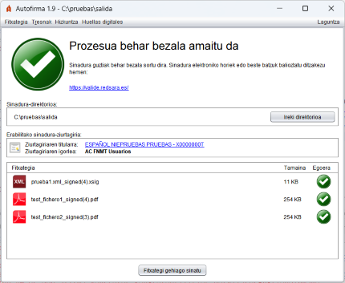
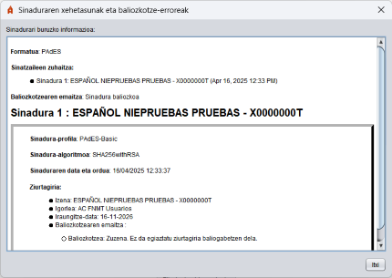

Sinatze-eragiketa bat amaitu ondoren, eragiketaren emaitzari buruzko informazioa duen pantaila bistaratzen da.
 
Sinadurari buruzko informazio gehiago nahi izanez gero, Sinaduraren xehetasunak esteka saka daiteke, eta horri buruzko informazioa duen elkarrizketa bat agertuko da:

Pantaila hori hiru ataletan banatzen da:
Sinatutako fitxategiari edo irteera-direktorioari buruzko informazioa Sinatutako fitxategiaren ibilbide osoa
bistaratzen da (bide hori saguaren eskuineko botoiarekin kopia dezakezu) edo irteera-direktorioarena. PDF dokumentu baten PAdES sinadura egin bada, botoi bat agertuko da sinatutako dokumentua sisteman lehenetsitako aplikazioarekin irekitzeko.
Sinadurak egiteko erabilitako ziurtagiriari buruzko informazioa Ziurtagiria ikus
daiteke (sistema eragilearen aplikazio lehenetsiaren bidez) hiperestekak sakatuta.
Sinadurari edo egindako sinadura-multzoari buruzko informazio zehatza. Dokumentu bat sinatuz
gero, gutxienez puntu hauek bistaratzen dira zuhaitz-egitura baten bidez:
Zuhaitzeko elementu batetik bestera mugitzeko, teklatuko kurtsoreak erabil daitezke.
Fitxategi bat baino gehiago sinatu badira, sortutako fitxategien, haien tamainaren eta emaitzaren zerrenda bistaratuko da. Sortu ezin izan diren sinaduren kasuan, sarrera-fitxategiaren bidea bistaratuko da. Zerrendako sinadura baten gainean bi aldiz klik egin dezakezu, informazio xehatura sartzeko.